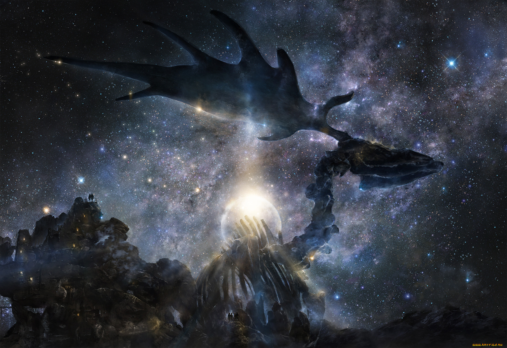
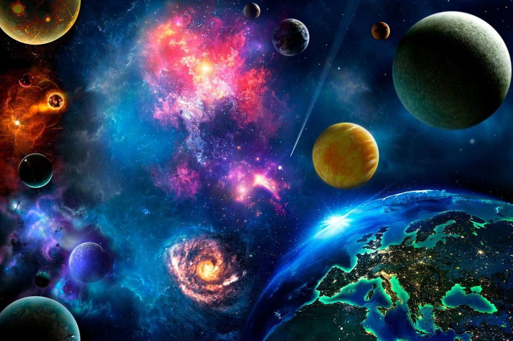

Нужно приучать сознание к единству жизни, к единству Космоса. Отсюда должно родиться чувство великой ответственности за каждую мысль, слово, и действие. …Явление ответственности перед Космосом должно утвердиться в сознании человека.Николай Рерих
Борьба с разъединяющим пространством - первый шаг в борьбе со всепоглощающим временемНиколай Федоров
Космизм – это течение мысли и направление деятельности, в котором космос рассматривается в качестве определённого целого, структура которого является живым организмом, развивающимся в определённом направлении. И тайну этого развития, его конечные цели, только предстоит раскрыть. Такие представления о космосе были популярны в античности. Древние греки чувствовали гармонию сфер, музыку мироздания, для них космос был живым.
Становление космизма
Теория эволюции, как только появилась на Западе, в качестве научной, стала прикладываться ко всему мирозданию, и в России эта идея получила очень благодатную почву. Глубину и масштабы космических процессов можно было почувствовать, только имея бездну внутри. Русские из всех европейцев, со своей широкой душой и поисками правды, оказались самыми подготовленными для перехода к новому мировоззрению.
Путь гуманизма к просветлению и самообновлению людей, становлению мира между народами, сплочению всех землян в единую братскую семью, торжество жизни и человечности это истинный путь человека. В русском космизме владение космосом не рассматривалось как самоцель и тем более как средство обретения величия человека, гордости за свои достижения.
Мечты о прекрасном будущем переходят грань действительности и получают реальные планы и воплощение, в ближней перспективе – это социальные преобразования, а в дальней – это преображение природы. Космизм становится фактором истории. Способы достижения будущего обретают реальное воплощение. Такое смещение акцентов становится возможным только благодаря русской мысли, заточенной на решение социальных и глобальных проблем одновременно с нравственной позиции.
Созидание временного, материального комфорта всем живущим – это слишком мелкая цель. Просто познание ради познания, пассивное созерцание мира, не даёт простора для реальных свершений. То, что может действительно увлечь всех своим идеалом – это высшее благо нечто в высшей степени конкретное, космический идеал жизни в духовном цвете, жизнь личностная, разумная сохранение, развитие, совершенствование её в реальных формах, воплощается космическая природа человека. В таком случае открываются безграничные возможности в единстве человека и космоса.

Формирование руского космизма
Исторические корни русского космизма имеют самое непосредственное отношение к России, к национальным особенностям русского народа. Один из основных постулатов русского космизма — идея единства людей, всего человечества. Тысячелетняя Россия — огромная страна, своего рода земной космос — всей историей своего развития и географического расположения обеспечивала и укрепляла в сознании людей необходимость территориального, а главное, духовного единства. Идея русской «соборности», единения, присущая русским, традиционная сельская община есть тот исторический фундамент, на котором возник и развивался русский космизм.
Интерес к учениям космистов сложился в СССР в связи с развитием космонавтики, актуализацией социальных и экологических проблем. Термин «русский космизм» как характеристика национальной традиции мысли возник в 1970-е годы хотя выражения «космическое мышление», «космическое сознание», «космическая история» и «космическая философия» встречались ещё в оккультной и мистической литературе XIX века (Карл Дюпрель, Макс Теон, Елена Блаватская, Анни Безант, Пётр Успенский), а также в эволюционной философии. Термин «космическая философия» употреблялся Константином Циолковским.
Нравственность и экология это та платформа, которая может объединить всех людей. Не идеология и политика, а установление всеобщего братства, осваивающего космическое пространство при безусловном сохранении природы с некоторыми элементами преобразования на начальном этапе и перспективой полного перевоплощения, в конечном итоге создание нового мира, но при одном главном условии – нравственный закон внутри каждого из нас. Это то, чем восхищался Эммануил Кант в 18 веке, на ряду, со звёздным небом над головой.
Над этой проблемой бились русские философы. Естествознание и религия шли рука об руку: Фёдоров-Циолковский-Соловьёв-Чижевский-Вернадский-Флоренский.
Составляющие пути
Направления русского космизма не ограничиваются только естественно-научным (новые открытия) и религиозным (вера в бессмертие души):
- Художественно-поэтическое, представленное в трудах Морозова, Сухово-Кобылина, Брюсова, Одоевского, Тютчева;
- Эзотерическое – выраженное в работах Рериха;
- Ноосферное – прослеживающееся в трудах Шипова, Акимова, Дмитриева.
Истоками космизма в нашей стране могли послужить: идея соборности связанная с жизнью традиционной сельской общины и идея всеединства – представления о всеобщей взаимосвязи и развития человека и природы.
Философия общего дела
Николая Фёдорова обращает внимание на неустроенность человеческой жизни, что
рождает дисгармонию в отношениях с природой как враждебной силой. Осуществление всеобщей регуляции – это
главная задача человека на пути к абсолютной гармонии. Только так можно преодолеть разрыв природы и
человека. Управление внутренней силой человека возможно только при достижении определённых знаний в области
психофизиологической регуляции. Науке Фёдоров отводил место рядом с искусством и религией в общем деле
объединения человечества, включая и умерших, которые должны в будущем воссоединиться с ныне живущими.
Идеи Фёдорова остаются актуальны и сегодня:
- Преодоление конечности человеческой жизни;
- Регуляция общественной жизни и природных процессов;
- Система «проектной философии действия»;
- Тесная связь нравственности и знания.
Иследование
Писатель-фантаст, провозвестник космонавтики и ракетодинамики Константин Эдуардович Циолковский считал, что человеческий мир может быть объяснён только с космической позиции. Он называл себя «чистейшим материалистом» и признавал существующей во вселенной одну субстанцию и одну силу – материю в её бесконечном превращении и восхождении к высшим степеням совершенства. Освоение космических просторов это промежуточная задача, которая поможет объединить всё человечество. Всю человеческую деятельность необходимо сосредоточить на совершенствовании взаимодействия человека и космоса. Свобода разумных организмов от среды обитания - это главная задача эволюции. Циолковский учил четырём принципам
- Панпсихизм – чувствительность Вселенной;
- Монизм – материя едина и её свойства одинаковы;
- Самоорганизация – Вселенная сама выстраивает структуру.
Духовная связь
Русский философ, богослов, поэт, публицист, Владимир Соловьёв утверждал, что истинной загадкой для разума
является не вечный, или божественный, мир. Напротив, как идеальная полнота всего и осуществление добра,
истины и красоты, он является как ясное и нормальное. Лишь в этой вечной сфере можно обрести безусловное
мерило для признания разумной природы как чего—то условного и преходящего. Действительность окружающего нас
мира является подлинной загадкой и задачей для разума. Эта задача ... сводится к выведению условного из
безусловного, ... случайной реальности из абсолютной идеи, природного мира явлений из мира божественной
сущности. ... связующее звено между божественным и природным миром есть человек. Человек совмещает в
себе всевозможные противоположности, которые все сводятся к одной великой противоположности между
безусловным и условным, между абсолютной и вечной сущностью и преходящим явлением, или видимостью.
Человек есть вместе и божество, и ничтожество
.
Вопрос о месте и роли человека является ключевым для всех течений космизма. Человек выступает и как часть космоса и как фактор эволюции космоса, как воплощение Великого единства.
Религиозная концепция не может обойтись без образа Бога как воплощения всех положительных качеств человека: добро, совершенство, нравственная высота, свобода, творчество, мощь. По мысли таких философов как Владимир Соловьёв, Николай Бердяев, Сергий Булгаков, Павел Флоренский человек призван восстановить единство Природы и Бога. Сама личность Христа – высшее воплощение Истины, рождённой единством Добра и Красоты. А Любовь – это «явленная истина», «действие Бога во мне и меня в Боге». Подобно древнегреческой философии мир и человек соотносятся как макрокосмос (большой мир) и микрокосмос, являющийся в своём роде «образом и подобием Вселенной» и несущий в себе всё, что есть в мире. Масштабы осмысления и перспективы захватывают и поражают воображение.
Духовный потенциал русского космизма его проективный характер и оптимистический взгляд на будущее делают это умонастроение крайне привлекательным для многих. Единственно, что настораживает это некая новая тотальность, где личным проблемам маленького человека нет места.
Рассуждение
Насущная необходимость соизмерять человеческую конкретную деятельность с принципами целостности этого мира становится актуальной как ни когда в наши дни. Проблемы глобализации столкнулись с отстаиванием личного суверенитета, идентичности, самосознания.
Соотношение части и целого не должно привести к перекосу в ту или иную сторону. Целое не должно давить, оно должно создавать условия для проявления уникальных возможностей каждого. Но и местечковый эгоизм не должен доминировать. Только при таком раскладе космизм становится фактором истории. Упор на сознательности исторических и эволюционных процессов это отличительная черта «русского космизма». Идея активной эволюции предполагает «антропный фактор» в движении мироздания, когда весь ход вещей обусловлен возникновением и развитием разумной жизни в форме человеческого социума, ноосферы.
В русском космизме прочно утверждается убеждение: человечество, самодовольно погрязшее в низшей свободе, свободе метаться во все стороны, изведывать все искусы, все возможности своего природного существования, никогда не сможет обрести высшей свободы, если оно не начнет направленно преобразовывать саму свою физическую природу, так чтобы она постепенно становилась способной осуществлять этот высший идеал. Прочное нравственное совершенствование человека возможно только вслед и вместе с физическим его преображением, освобождением от тех природных качеств, которые заставляют его пожирать, вытеснять, убивать и самому умирать.
Для Н.К.Рериха мышление «по мечте» – это мышление деятельное, приближающее прекрасное будущее. При этом и у Н.К.Рериха, и у Н.Ф.Федорова и у В.И.Вернадского отношение к будущему носит деятельный характер. Н.Ф.Федоров пишет о прогрессе не только знания, но и действия, при этом прогрессе знания заключается не только в прогрессе знания «что есть», а главное, в прогрессе знания «что должно быть», в переходе «ученого сословия от знания к делу». В.И.Вернадский говорит о «биогенном эффекте работы научной мысли», подчеркивает деятельный характер мысли: «Действие – характерная черта научной мысли. Научная мысль – научное творчество – научное знание идет в гуще жизни…». Так, в рамках русского космизма происходит деятельный синтез Запада и Востока. В «Агни-Йоге» Н.К. и Е.Н.Рерихи снова и снова подчеркивают деятельный характер сознания и мышления, пишут о единстве любви, красоты и действия.

Актуальность
Бурное развитие технологии в наши дни привело к закономерным кризисным явлениям, которые трансформировались в конце XX в. в глобальные проблемы, связанные, в том числе, и с экологией. Культура техногенной цивилизации всегда включала в себя научную рациональность, которая была направлена на преобразование окружающего мира в соответствии с потребностями человечества. Необходимо указать на совпадение многих представлений научной картины мира с идеями философии русского космизма.
Извечной ностальгией человека всегда была идея обретения целостного представления о мире. Он не может и не хочет ждать с удовлетворением до тех пор, пока будущая наука даст достаточный материал для этой цели. Наверное, в самой природе человека есть нечто, что не может удовлетвориться одной точной наукой, какой думал ограничить его позитивизм. Потребности метафизики не могут устраниться из жизни человека.
Восходящее творчество – это вечный поиск, образы которого в форме понятий «пути», «дороги» так характерны для образа мыслей Н.К.Рериха. Вечность ассоциируется со всем космосом, для которого характерно бесконечное дление, а значит, исчезает время. Поэтому «вечность» вызывает образ «покоя», а акустическим образом «покоя» является «тишина». Слушая «тишину» и творя в «тишине», рериховский герой приобщается к вечности. «Тишина» наполнена мыслями творца и поэтому она «громче грома» («Уводящий»). Творческая эволюция развертывает перед человеком и человечеством вечное и обеспечивает вечное постижение вечности.
Эта категория вечности в рериховской концепции творчества сливается с современным философским положением о безграничности познания и духовных потребностей, которое является важным в системе Ноосферизма. «В идеальных потребностях нормы – лишь ступеньки бесконечной лестницы».
Но творчество одновременно означает и свободу. Восходящий процесс творчества означает восхождение свободы человека и человечества, преодоление все новых «преград несовершенства». Так, образуется триада «творчество-вечность-свобода». При этом свобода в рериховском понимании базируется на «сознательной дисциплине духа».

Заключение
Слепая сила природы должна быть обуздана человеком и должна стать зрячей. А для этого ему необходимо овладеть своим внутренним миром, покорить свою человеческую натуру, не убить её, а преобразить. Пафос преображения вечный спутник космизма. Благодаря ему история обретает перспективу и лицо созидающего человечества, преодолевающего все преграды и условности. Субъективные факторы исторического развития имеют прямое отношение к идеям русского космизма: психологические особенности жизнедеятельности народа, господствующие идеологические представления, деятельность исторических личностей и научно-технические достижения. В далёкой исторической перспективе все эти факторы обретают единство космического масштаба.